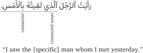

watermark
4 TikZ Figures
4.1 TODO:
- Move tikzarabic filter YAML options to within arabicsupport section
5 Introduction
I sometimes need to use TikZ figures with Arabic text in my document. This chapter describes how to do that.
In order to render TikZ figures in Quarto we will use a Pandoc Lua filter. I have modified a Pandoc Lua filter that was originally published here: https://github.com/danmackinlay/quarto_tikz
The modified filter tikzarabic.lua is part of my arabic-support extension.
5.1 Filter options
The filter needs some options that I’ve set globally in _quarto.yml:
tikzarabic:
cache: true
format: svg
embed_mode: link
engine: lualatex
template_html: srctex/tikz-template-html.tex
template_pdf: srctex/tikz-template-pdf.tex
libgs: /usr/local/Cellar/ghostscript/10.04.0/lib/libgs.dylibDespite being named tikzarabic you can use this filter for regular TikZ diagrams as well. There is an example at the end of this chapter.
There is also an official filter that handles TikZ (and other formats) here: https://github.com/pandoc-ext/diagram. But unfortunately, I wasn’t able to get it to work with Arabic text. Probably something I was doing incorrectly.
Here is an explanation of the options:
cache: Uses a cache on the system in order not have to evaluate the TikZ code for every render. Hasn’t been tested fully. Default value:false.format: SVG preserves vector information for optimal rendering. Default value:svg.embed_mode: Only affects HTML output. If set tolinkthen the HTML includes the figure as a link. If set toinlinethen the HTML encodes the figure inline as ASCII text. Default value:inline.engine: The Arabic typesetting I’m using within the figures uses the package arabluatex which needs the LuaTex engine. This is specified using the textlualatex. Ideally, I should use xelatex to be consistent with the rest of the document but I haven’t yet figured out how to do that. There may be some incompatibility between the babel package and TikZ which would need to be resolved. Default value:latex.template_html: Common TikZ template code for HTML output. Here’s what I’m using in my srctex/tikz-template-html.tex:\RequirePackage{luatex85} \documentclass{article} \usepackage[luatex,active,tightpage]{preview} \usepackage{amsmath} \usepackage{tikz} \usepackage{xcolor} \definecolor{mydarkgray}{RGB}{52, 58, 64} \usepackage{fontspec} \defaultfontfeatures{Scale=MatchLowercase} \defaultfontfeatures[\rmfamily]{Ligatures=TeX,Scale=1} \setmainfont{Charis SIL} \usetikzlibrary{%s} \usetikzlibrary{matrix} \usepackage{arabluatex} \newfontfamily{\arabicfont}[Script=Arabic,Scale=1.2]{Vazirmatn-Regular} \begin{document} \begin{preview} \color{mydarkgray} %s \end{preview} \end{document}Note the use of the color
mydarkgrayto match the body text of the HTML theme. The color was obtained by inspecting the stylesheet of this very page and converting the HTML color343a40to the RBG values{52, 58, 64}.The code block in the
.qmdfile will be inserted in the second%s’s location. Additional TikZ libraries may be inserted in the first%s’s location using the YAML optionlibraries.Default template:
\documentclass[tikz]{standalone} \usepackage{amsmath} \usetikzlibrary{%s} \begin{document} %s \end{document} ]]template_pdf: Common TikZ template code for PDF output. My template is identical totemplate_htmlexcept for a different weight for the Arabic font: “light” instead of “regular” to match the main document, and the absence of the dark gray color for the text. The default template is the same as the default fortemplate_html.libgs: In order to use this filter for HTML output, you need to make sure that the utlities dvisvgm and Ghostscript are installed on your system. This can be verified using the commands:which dvisvgmandwhich gs. If dvisvgm was not compiled with Ghostscript then you may need to link the location of the Ghostscript library on your system using the optionlibgs. Default value:"".
5.2 Example TikZ figure with Arabic text
Here is an example of a TikZ diagram with Arabic text:
This is the source code for the figure in the source .qmd file:
\usetikzlibrary{decorations.text, decorations.pathreplacing}
\begin{tikzpicture}[nodes={text depth=0.25ex,text height=2.0ex}]
\path [decoration={text effects along path,
text=.\txarb{لَقِيتُهُ بِٱلْأَمْسِ} \txarb{ٱلَّذِي} \txarb{رَأَيْتُ ٱَلرَّجُلَ},
text effects/.cd,
path from text, text along path,
group letters, word count=\w,
every word/.style={name=word-\w, execute at begin node=\strut}},
decorate] (0,0);
\draw [decoration={brace, mirror}, decorate]
(word-1.south west) -- (word-1.south east)
node [midway, rotate=90, anchor=south, left=0ex, align=left] {\scriptsize connector};
\draw [decoration={brace, mirror}, decorate]
(word-2.south west) -- (word-2.south east)
node [midway, rotate=90, anchor=south, left=0ex, align=left] {\scriptsize connected noun};
\path (0,0) node [midway, below=13.5ex, right=0ex, align=left] {``I saw the [specific] man whom I met yesterday.''};
\end{tikzpicture}5.3 Overriding global options
If you wish to override any of the global parameters back to their default values, or to other values, you can do so inline using the comment-pipe (%%| option: value) format. Here is an example:
![]()
Source code:
%%| embed_mode: inline
%%| engine: default
%%| template_html: default
%%| template_pdf: default
\begin{tikzpicture}[nodes={text depth=0.25ex,text height=2.0ex}]
\node[draw, circle] (A) at (0,0) {A};
\node[draw, circle] (B) at (2,2) {$\phi$};
\node[draw, circle] (C) at (4,0) {C};
\node[draw, circle] (seven) at (5,1) {888888};
\draw[->] (A) -- (B);
\draw[->] (B) -- (C);
\draw[->] (C) -- (A);
\end{tikzpicture}